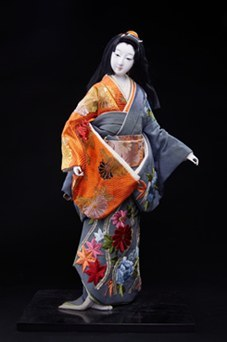

Kyō Ningyō (Búp bê Kyoto) là một trong những dòng búp bê truyền thống nổi tiếng và cao cấp nhất của Nhật Bản, được hình thành từ thời Heian và phát triển rực rỡ trong thời Edo. Với giá trị nghệ thuật đặc sắc, Kyō Ningyō đã được công nhận là Nghề thủ công truyền thống của Nhật Bản.
Tác phẩm khắc họa hình ảnh một người phụ nữ Kyoto trong bước đi nhẹ nhàng, khoác bộ kimono nhiều lớp với họa tiết lá phong đỏ, hoa cúc và các biểu tượng thiên nhiên bốn mùa. Sự phối hợp hài hòa giữa màu sắc và trang phục thể hiện phong cách thanh lịch, tinh tế đặc trưng của cố đô Kyoto.
Khác với nhiều dòng búp bê truyền thống khác, Kyō Ningyō tập trung tôn vinh vẻ đẹp lý tưởng của người phụ nữ Nhật Bản thông qua thần thái, dáng đứng và từng chi tiết của kimono. Mỗi tác phẩm đều được chế tác hoàn toàn thủ công, phản ánh trình độ thủ công tinh xảo và giá trị thẩm mỹ lâu đời của các nghệ nhân Kyoto.
Ngày nay, Kyō Ningyō không chỉ là một tác phẩm mỹ nghệ mà còn là biểu tượng của văn hóa Kyoto, góp phần gìn giữ và truyền tải vẻ đẹp truyền thống Nhật Bản qua nhiều thế hệ.
京人形は、日本で最も有名で格調高い伝統人形のひとつで、平安時代に起こり、江戸時代に大きく花開きました。優れた芸術的価値から、日本の伝統的工芸品に指定されています。
本作は、赤いもみじや菊など四季の自然をあしらった着物を幾重にもまとい、軽やかに歩む京都の女性の姿を表しています。色彩と衣装の調和のとれた組み合わせが、古都・京都ならではの上品で繊細なスタイルを表しています。
他の多くの伝統人形とは異なり、京人形は風情、立ち姿、そして着物の細部を通して日本女性の理想的な美しさをたたえることに重きを置いています。一体一体がすべて手作業で作られ、京都の職人の精巧な技と長い歴史に培われた美意識を映し出しています。
今日、京人形は美術工芸品であるだけでなく京都文化の象徴でもあり、日本の伝統美を世代を超えて守り伝えています。